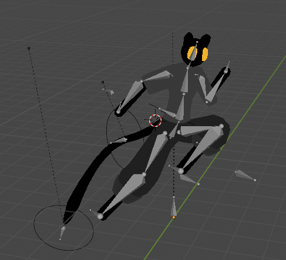
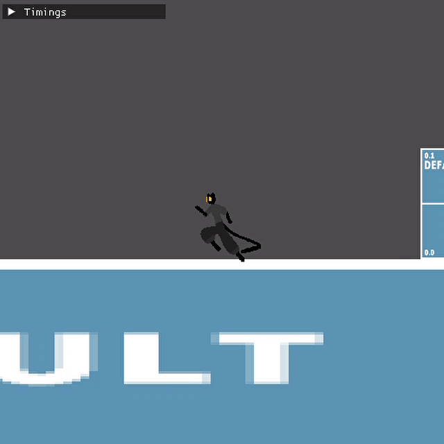
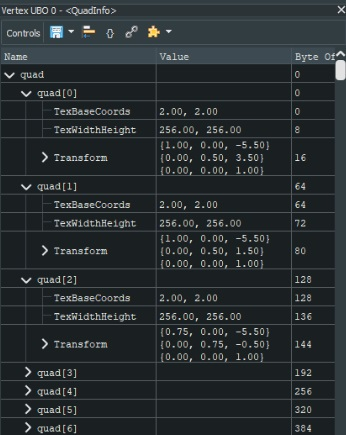

GEPP
Gameplay
Gameplay programming is probably my favorite type of game programming, because of how important it is in defining the player experience, it sits in an interesting intersection between tech and design. As part of my research for this project I looked into game feel and found a very interesting paper that broke it up into 3 distinct elements:
I found that focusing on these three elements provided a very clear language for thinking and communicating about game feel.
Gameplay - Support
The idea with support is to make the game respond inline with player's feelings and intentions, rather than the purely logical state of the game. To support the player's intention, the platformer prototype has three different time values:
The left gif shows coyote time, the one on the right shows the jump buffer.

bool MoveSystem::ShouldJump(const PlayerController& pc) const { bool keyPressedInTime = pc.jumpReleased ? pc.passedTime - pc.jumpPressedTime < pc.jumpCache1 : pc.passedTime - pc.jumpPressedTime < pc.jumpCache2; bool coyote = pc.passedTime - pc.lastGroundedTime < pc.coyoteTime; return (pc.isGrounded || coyote) && keyPressedInTime && pc.readyToJumpAgain; }
Platformers often have ways to affect how far the player character jumps, the classic example is holding down the jump button to jump higher, which I implemented. I also implemented a system that lets the player trade horizontal movement for vertical movement, introducting an interesting choise and use of momentum. So, while in a jump moving upwards, the player can move against the initial horizontal direction to effectively convert their horizontal velocity into vertical velocity.
if (playerController.jumpReleased || playerController.velocity.y < -0.2f) { playerController.velocity.y -= playerController.gravity * delta; } else { playerController.velocity.y -= playerController.jumpHeldGravity * delta; } // Convert horizontal velocity to vertical velocity when going up if (playerController.velocity.y > 0.0f && playerController.moveDirection * playerController.initialAirHorizontalVelocity < 0.0f && playerController.moveDirection * playerController.velocity.x < 0.0f) { playerController.velocity.y += playerController.airVerticalAcceleration * delta; }
Gameplay - Amplification
The feedback that works to communicate the game state to the player, in my case, audio and visuals, but it could also include other forms of feedback such as haptic feedback.
For the visuals, I wanted the character to clearly communicate its state to the player, with idle, running, jumping and falling animations. I modelled, rigged and animated the player character in blender and then rendered the animations into 2D frame animations. This is the same technique that Dead Cells and Hades use to get nice and smooth 2D graphics that are easy to tweak and produce on a limited budget.
For the audio I decided to work with an audio designer and asked him what kind of functionality he would need.
Music and sound design by Daniel Jakob.
danieljakob.net
I used a minimalistic audio engine library miniaudio, and implemented an AudioArray class that we used to play footsteps. The AudioArray holds an array of audio samples that can be picked from at random without playing the same one twice in a row, and lets the user specify a pitch range, so the footsteps always sound a little different.
The audio array uses an std::vector to hold each audio sample. When I implemented this I started to experience crashes and realized it was important to make the audio samples have a move constructor, to avoid them getting destroyed when they were moved to a new array.
Audio::Audio(Audio&& other) noexcept { _audio = other._audio; _volume = other._volume; _pitch = other._pitch; other._audio = nullptr; }
Gameplay - Physicality
I wanted to get the right balance between floaty jumps - that feel smooth and like the player can string moves together and make use of momentum to move faster and better - and more precise and rigid control that lets the player control the character very intuitively without having to try and account for sliding around too much.
It also really helped having full control of how physics was handled, so I can make the player character interact with the environment exactly how I want.
Engine
Engine - Rendering
For rendering I made a 2D batch renderer using OpenGL. Because everything is rendered in a single batch, there are 3 single elements of this renderer:
To make the vertices as light as possible, the flyweight pattern is used so they don't have to hold duplicate data. So each vertex contains:
The uniform buffer contains:
Here is a screenshot of the uniform buffer viewed in RenderDoc:
With that we can calculate everything we need in our basic 2D renderer. Here is how the vertex shader calculates the texture coordinates and position:
void main() { TexCoords = (quad[QuadID].TexBaseCoords + Pos * quad[QuadID].TexWidthHeight) / TexSize; vec2 offsetPosition = Pos + Offset; vec3 position = CameraMatrix * quad[QuadID].Transform * vec3(offsetPosition, 1.0f); gl_Position = vec4(position.xy, 0.5f, 1.0f); }
When I tested the performance, it turned out that the largest bottleneck was in how transforms were handled. I saved the position, rotation and scale of each object and then calculated the transform every frame, which became very expensive with large amounts of objects. To quickly and significanlty improve the performance of the engine with many sprites, I could store the transforms and calculate positions, rotations and scales from that when needed, or cache the transforms, which was my initial plan.
Engine - Physics
All physics bodies are defined by axis aligned bounding boxes (AABBs). The algorithm for detecting whether two AABBs overlap used is the Seperating Axis Theorem (SAT), which checks if there is an overlap on each axis. Since we only have a collision if all axes overlap, we can early-out as soon as we find an axis where they do not overlap.
To resolve collisions, I used the projection-based method, where the object is moved back directly by changing its position. The detection steps measures 4 overlap values in each direction, in this step I use those overlap measurements to find the direction with the smallest amount of overlap and move the dynamic object back in that direction by the overlap amount so that the objects no longer overlap.
for (auto [dEntity, dTrans, dAabb] : dynamicAABBs.each()) { for (auto [sEntity, sTrans, sAabb] : staticAABBs.each()) { // COLLISION DETECTION // Measure overlaps and early return if there is an edge with no overlap if ((overlaps[0] = dTrans.position.x + dAabb.extents.x - (sTrans.position.x - sAabb.extents.x)) < 0.0f) { continue; } if ((overlaps[1] = sTrans.position.x + sAabb.extents.x - (dTrans.position.x - dAabb.extents.x)) < 0.0f) { continue; } if ((overlaps[2] = dTrans.position.y + dAabb.extents.y - (sTrans.position.y - sAabb.extents.y)) < 0.0f) { continue; } if ((overlaps[3] = sTrans.position.y + sAabb.extents.y - (dTrans.position.y - dAabb.extents.y)) < 0.0f) { continue; } // COLLISION RESPONSE // If we get to this point, all edges have overlap and we know the AABBs overlap. // Find edge with smallest overlap and move the dynamic object back on that edge so there is no more overlap. minDist = std::numeric_limits<float>::max(); for (int i = 0; i < 4; ++i) { if (minDist > overlaps[i]) { minDist = overlaps[i]; projVecIndex = i; } } switch (projVecIndex) { case 0: dTrans.position.x -= minDist; break; case 1: dTrans.position.x += minDist; break; case 2: dTrans.position.y -= minDist; break; case 3: dTrans.position.y += minDist; } } }
The simplicity of this algorithm is so effective, that even with 1000s of of AABBs and brute force collision detection, collision detection barely had an effect on performance. This is also in large part because the only dynamic object in my test game is the player character, and the system only performs dynamic vs static collision detection.
Engine - Entity Component System
The architectural pattern I used to structure the game code is the Entity Component System. This is a data-oriented way to structure code, which can potentially improve performance significantly. For this I used a third-party library, EnTT, which is also used in Minecraft Bedrock Edition.
Unity DOTS uses archetype ECS, where each unique *set* of components belong to a specific archetype array. This method provides a fast look-up and general optimization on how the components are stored. Though it does add some extra cost to removing and adding components, as this changes the archetype it belongs to.
EnTT uses sparse set ECS, where each component *type* belongs to a specific component array. To find all sets of some specific components, we have to iterate all the components in one of the component arrays and check against the other arrays, which is much less optimal that archetype ECS. However, with sparse set ECS we have the ability to optimize for specific groups based on where we find bottlenecks. We can do this by sorting components that belong to those groups so that they are always together at the front of the array. So EnTT lets us optimize access to the most performance-critical sets of components.
Using ECS turned out to work really well with naturally making big engine-related systems such as sprite rendering and physics, and made it very easy to reason about the order of different systems.